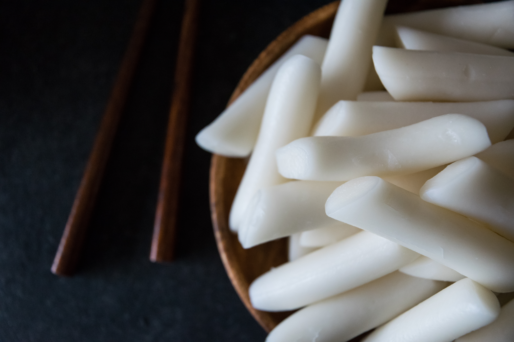

Tteokbokki
Home

Description
According to Wikipedia, "Tteokbokki , topokki or simmered rice cake, is a Korean food made from small-sized garae-tteok called tteokmyeon or commonly tteokbokki-tteok. It is often paired with eomuk, boiled eggs, and scallions, and seasoned with spicy gochujang."
Ingredients
- 200 g (≈1 cup) Organic short-grain white rice
- 120 ml (½ cup) hot filtered water (plus 1–2 tbsp more if needed)
- ¼ tsp quality sea salt
- 1 tsp raw apple cider vinegar or lemon (optional, but highly recommended for soaking)
- Neutral oil (my recommendation: unrefined coconut oil) for kneading
Steps
- Rinse the Rice Well
Place rice in a glass container and cover with filtered water.
Rinse 4–5 times, stirring with your hand, until water runs mostly clear.
This removes surface starch and impurities.
- Soak & Sour for Digestive Benefits
Cover the rinsed rice with 2–3 cm of filtered water in a glass container.
Add 1 tsp raw apple cider vinegar or lemon if tolerated—this reduces phytic acid.
Soak at room temperature 6–8 hours (shorter, 4–6 hours if your kitchen is warm/you’re managing histamine issues).
- Drain, Rinse & Dry
Drain rice and rinse well until there’s no vinegar/fermented smell.
Spread rice on a clean cotton towel and pat gently to remove excess water (leave on towel for ~20min)
- Blend to Flour
Transfer the dried rice to a high-speed blender (I prefer this Vitamix).
Blend in small batches (1 cup at a time if doing a large batch) until super fine. Let it settle before opening.
Sift/Push through a fine sieve for a silky flour. Reblend coarse bits.
- Make the Dough
In a bowl, combine sieved rice flour with ¼ tsp salt.
Slowly add 100 ml hot water, stirring with chopsticks or flat spatula.
Add up to 20 ml more, 1 TBSP at a time, until the dough is soft, sticky, and holds together.
Dough should be like Play-Doh—not crumbly, and certainly not runny like pancake batter...
TIPS
Do a Pinch Test: Roll a small ball. If it’s smooth without cracks, hydration is just right.
Always add boiling/hot water—this gelatinizes starch for that amazingly chewy bite.
- Steam
Transfer dough to a heat-safe bowl (ex: ceramic).
Cover with non-toxic parchment. (prevents steam water from dripping into the rice cake)
Get ~2 inches of water to simmer until steam is steady.
Carefully place the covered bowl inside the steamer basket of the pot of simmering water.
Cover the pot and steam for 25–30 minutes at a gentle simmer.
- Pound & Knead
Generously oil your work surface (unrefined coconut oil recommended for health benefits).
While still hot, pound well or knead dough for ~7 minutes until smooth, elastic, and bouncy.
- Shape & Chop the Rice Cakes
Roll dough into long cylinders about 2 cm thick.
Let cool slightly, then cut into 2-inch pieces.
Troubleshooting: If rice cakes stick to knife, coat knife lightly with oil.